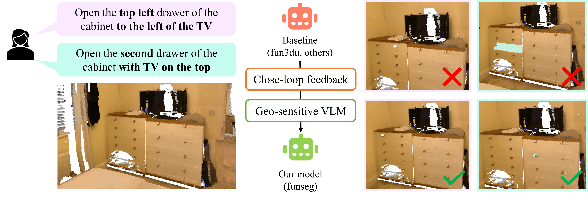
FunSeg is a powerful framework designed for understanding and segmenting functionality in 3D scenes. Given a high-resolution 3D scene, a set of RGBD views displaying the scene, and a instruction of the action to be performed, FunSeg can segment functional objects that can be used to perform specific actions, especially for instructions requiring fine-grained spatial understanding, where its performance is superior to other strategies.
In this paper, we address the problem of Task-Driven Fine-Grained Affordance Grounding , which requires agents to precisely localize functional elements (e.g., handles, switches) within complex 3D scenes based on natural language instructions. While existing pipelines provide a foundation for this task, they predominantly rely on a single-pass projection approach, suffering from semantic ambiguity and error propagation.
To resolve these challenges, we propose FunSeg, a robust framework for task-driven 3D functional grounding that enhances spatial reasoning across modalities. We introduce spatial-sequential instruction tuning , supported by a novel hybrid semantic-geometric dataset, to empower VLMs with the fine-grained ordinal and spatial reasoning. Furthermore, we implement a VLM-driven self-verification mechanism that actively evaluates 2D cues and filters out inconsistent perspectives before 3D lifting. FunSeg establishes a new SOTA on the SceneFun3D benchmark, demonstrating superior precision and robustness in task-driven 3D functional grounding.
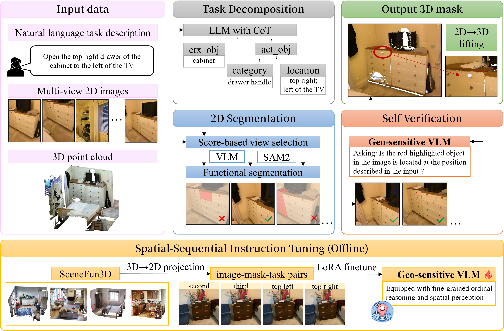
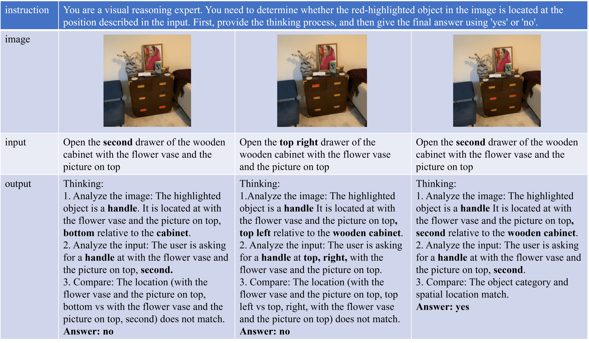
| Method | mAP | AP50 | AP25 | mAR | AR50 | AR25 | mIoU |
|---|---|---|---|---|---|---|---|
| OpenMask3D | 0.20 | 0.20 | 0.40 | 20.3 | 24.5 | 27.0 | 0.20 |
| OpenIns3D | 0.00 | 0.00 | 0.00 | 40.5 | 46.7 | 51.5 | 0.10 |
| LERF | - | 4.9 | 11.3 | - | - | - | - |
| OpenMask3D-F | - | 8.0 | 17.5 | - | - | - | - |
| OpenTrack3D | - | 8.9 | 18.5 | - | - | - | - |
| Fun3DU | 6.16 | 11.69 | 21.80 | 27.37 | 36.18 | 41.57 | 10.72 |
| SynthFun3D | 7.96 | 18.65 | 35.51 | 26.85 | 38.65 | 47.19 | 16.58 |
| FunSeg (τ = 0.8) | 11.33 | 27.19 | 44.04 | 31.80 | 44.04 | 49.89 | 19.76 |
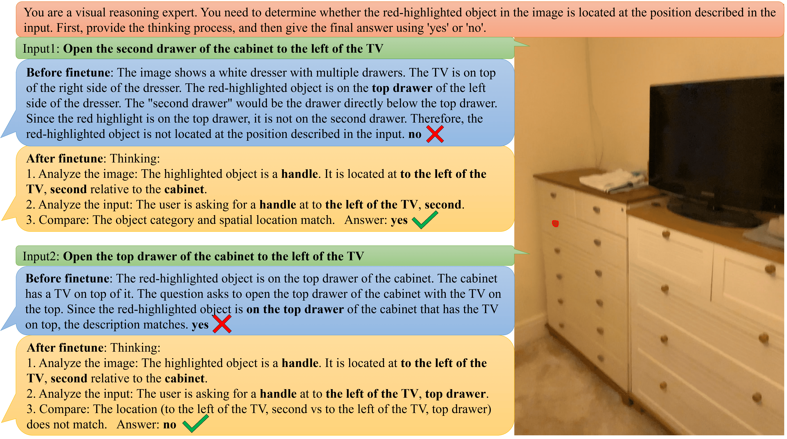
Ground Truth; Prediction; Overlap.
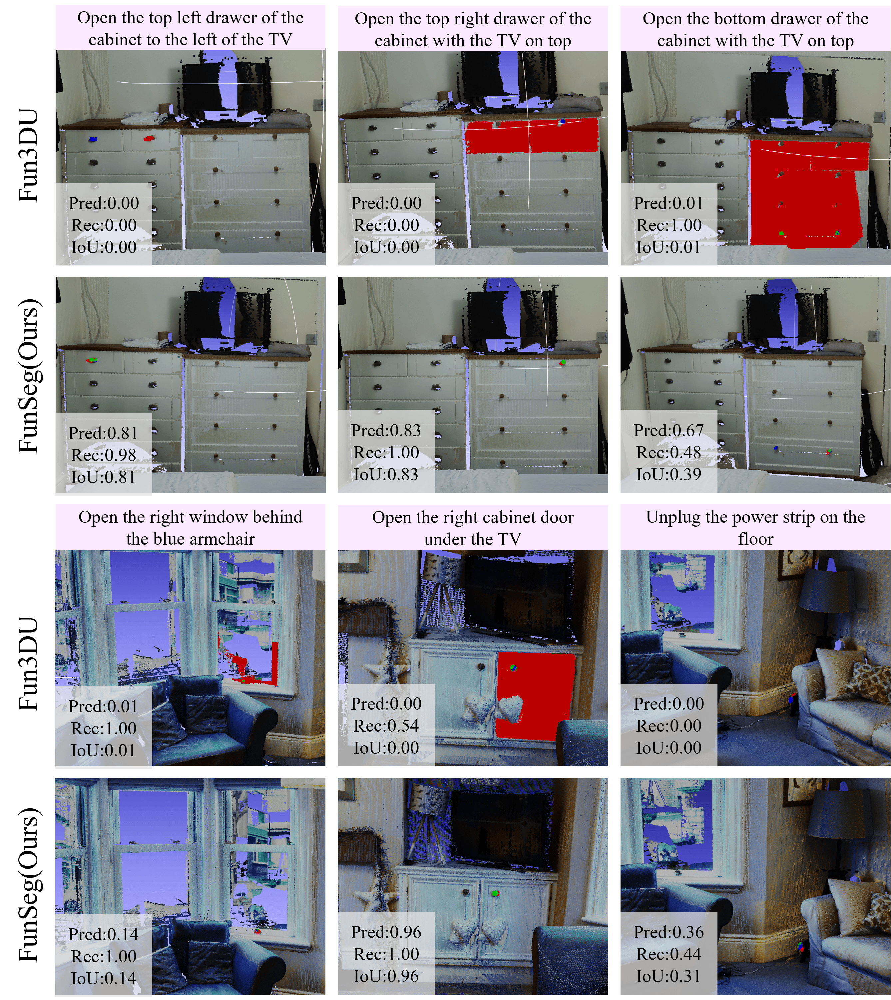
Demonstrate the model's performance on non-SceneFun3D data (the following pictures were taken at the author's home) to show that the model learns general spatial logic rather than dataset-specific distributions.
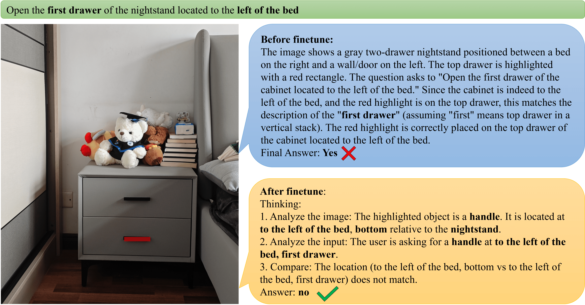
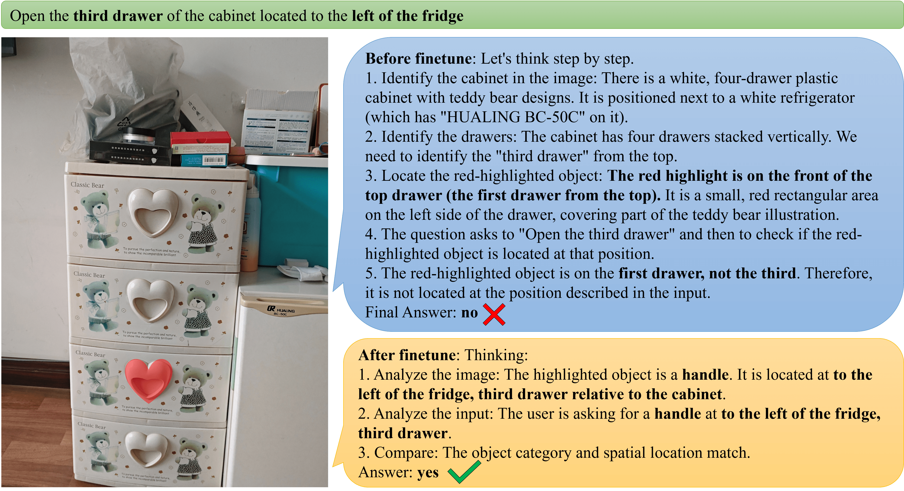
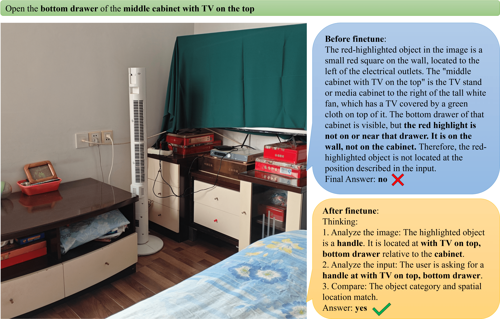
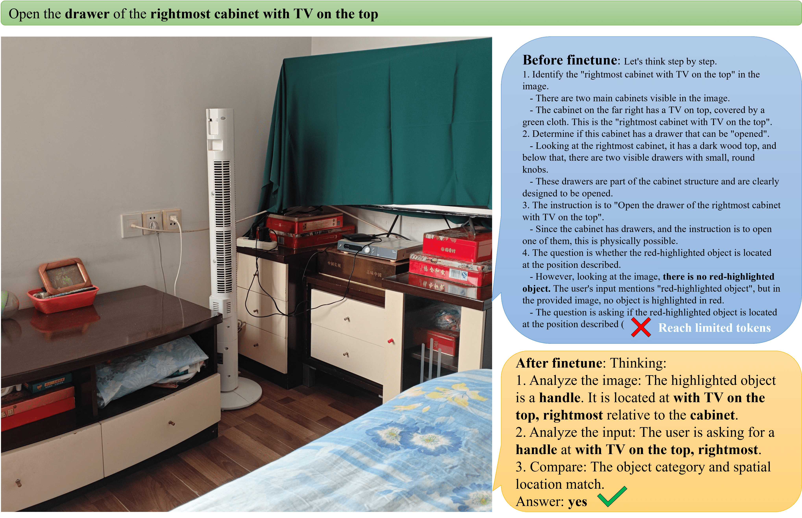
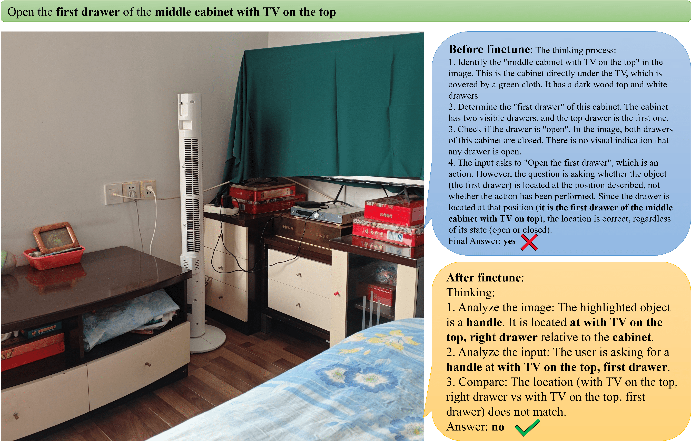
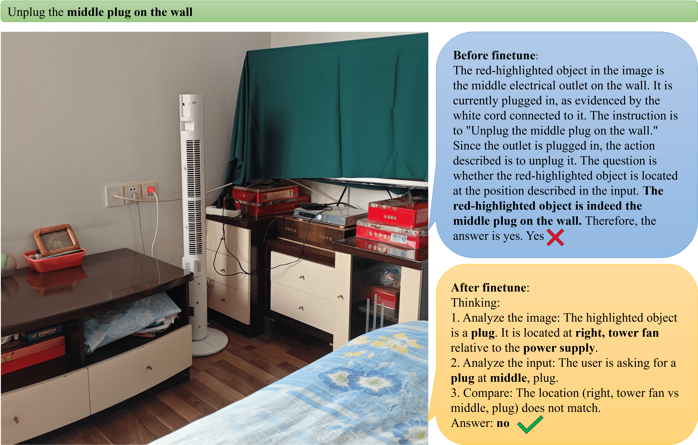
@article{funseg2026,
title = {},
author = {},
journal = {},
year = {}
}